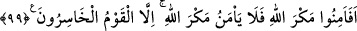

99. Allah’ın azabından emin mi oldular? Fakat ziyana uğrayan topluluktan
başkası, Allah’ın (böyle) mühlet vermesinden emin olamaz.
“Allah’ın tuzağından emin mi oldular?” “Allah’ın tuzağı” ifadesi, kulunu yavaş
yavaş helâke yaklaştırıp hiç bilemeyeceği yerden yakalamasından istiaredir. Maksad
Allah’ın azabının, zikredilen iki vakitte gelmesidir.
Haddâdî demiştir ki: Azab, mecaz olarak tuzak (mekr) diye isimlendirilmiştir. Çünkü
tuzak, tuzak kuran tarafından, tuzak kurulan kimseye farkında olmadığı taraftan gelir.
Fakat hilekârlık mânâsına gelen mekr (tuzak), Allah hakkında caiz değildir.
Allah Teâlâ’nın günahkârları yavaş yavaş cezalandırması ve yakalaması bu şekilde
olunca, küfür ile, tefekkür ve ibret almayı terk ile “ziyâna uğrayan topluluktan başkası
Allah’ın tuzağından emin olmaz.”
Haddâdî der ki: “Peygamberler Allah’ın azabından emin oldukları halde neden ziyana
uğrayan topluluktan değillerdir?” diye sorulursa, buna şöyle cevap verilir: Ayetin
mânâsı: “Asîlerden hiç kimse Allah’ın azabından emin olmaz.” veya “Günahkarlardan
hiç kimse Allah’ın azabından emin olmaz.” demektir. Peygamberler günah işleyerek
Allah’ın azabından emin olmamışlardır. Bu sebeple onlar kendiliklerinden Allah’a karşı
gelmezler.”
et-Te’vîlâtü’n-Necmiyye’de şöyle denilmektedir: Allah Teâlâ’nın tuzağı, kahır ehline
kahır ile, lütuf ehline de lütuf iledir. Kahır ehlinden ancak dünya ve ahiret saadetini
ellerinden kaçıranlar, lütuf ehlinden de ancak dünya ve ahireti kaybedip Mevlâyı
kazananlar Allah’ın mekrinden emin olur. Buna göre ehlullah Allah’ın tuzağından
emindirler. Çünkü Allah’ın onlar hakkındaki tuzağı lütuf ile olup: “İşte güven
onlarındır ve doğru yolu bulanlar da onlardır.” (el-En‘âm, 6/82) ayeti buna delâlet
eder. Bu yüzden Allah Teâlâ kendisi hakkında: “Allah, tuzak kuranların en iyisidir.”
(Al-i İmran, 3/54) buyurmuştur. Çünkü insanların mekri, hak edene de etmeyene de hep
kahır ile olduğu halde Allah Teâlâ’nın mekri hak edene lütuf iledir. Bunu iyi anla ve
ibret al.”
Allah’ın mekrinden (tuzağından) emin olmak küfür sayılmıştır. Fakat bu, kerem ehline
değil, mekir ehline göredir. Çünkü kâmil velîler, dünya hayatlarında da selametle
müjdelenmişlerdir. Nitekim Allah Teâlâ şöyle buyurmuştur: “Dünya hayatında da
müjde onlara!” (Yûnus, 10/64) Şu halde dünyevî ve uhrevî selamet onlar içindir. Yine
Allah Teâlâ onlar hakkında “İyi bilin ki, Allah’ın dostlarına korku yoktur ve onlar
üzülmeyeceklerdir.” (Yûnus, 10/62) buyurmuştur. Fakat onlar, selamette olduklarını
gizlerler. Çünkü bunu gizli tutmakla emrolunmuşlardır. Selamette olduklarını bilmeleri
onlara kâfîdir. Bunu başkalarının bilmesine ihtiyaçları yoktur. Peygamberler (a.s.) ise
şeriat getiren kimseler olduklarından emniyet ve selamette olduklarını haber vermeleri
gerekir. Muhataplarının onlara iman etmesi ve davetlerini kabul etmesi için onların